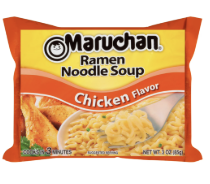

Homepage
World's Best Ramen

Description
No description needed for these noodles.
Ingredients
- 1 Packet of the World's Greatest Ramen
- Water
- Anything else your heart desires
Equipment
- 1 Bowl of some kind; fancier the better
- 1 Microwave for this recipe...stove top optional, but not optimal
- 1 Fork
Steps
- Step 1: Gather your ingredients.
- Step 2: Open the packet and take out the seasoning. Place brick in the bowl.
- Step 3: Add water to the bowl. Place in microwave for what you guess is the right amount of time.
- Step 4: Burn hands taking it out of microwave. Add ice cubes to cool down overcooked ramen.
- Step 5: Let sit for unknown period of time. Enjoy!